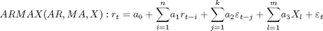
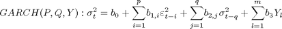
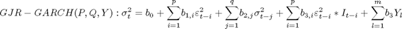
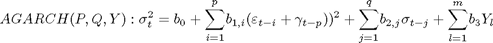
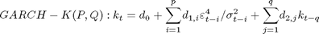
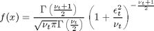
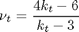

Autoregressive Conditional Mean, Variance and Kurtosis
Allows the estimation of the Autoregressive Conditional Kurtosis Model presented in Brooks, C., Burke, S., P., and Persand, G., (2005), "Autoregressive Conditional Kurtosis Model", Journal of Financial Econometrics, 3(3),339-421.
Contents
Mean Models

Variance Models
   
Kurtosis Models

Distribution

where the degrees of freedom can be expressed as a function of conditional kurtosis
